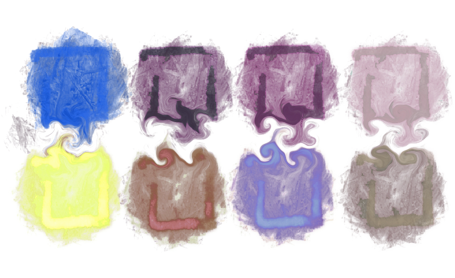

Color Extractor, a web application made with Streamlit
 Color Extractor is a Web App that allows you to extract palettes of colors from various publicly available colormaps, as well as from your own created colormaps.At the moment Color Extractor contains 253 imported colormaps from 6 different Python packages. In adition, you can create an infinite combinations of your own colormaps.
As an output, app provides: HEX color lists, python code so that you can use created colormap in your python code; and most importantly you have an an option to download a Procreate .swatches file with your palette.
Color Extractor is built using Streamlit., an open-source Python library for making custom web apps. Color Extractor is deployed via Streamlit Sharing.
You can access Color Extractor here.. The entire source code is available on my GitHub..
Main options
Here is a link to YouTube for Color Extractor walkthrough. You can also see below some screenshots taken from the Color Extractor: